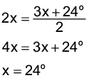

Introdução à unidade
Nesta unidade, relembramos os conceitos de circunferência e círculo estudados em anos anteriores, para então apresentar as posições relativas entre duas circunferências e entre uma circunferência e uma reta.
A seguir, relacionamos os objetivos que se pretende atingir ao estudar os conceitos desta unidade.
Capítulo 1 – Relembrando circunferência e círculo
Objetivos:
- Reconhecer a presença de formas circulares no dia a dia.
- Reconhecer e diferenciar círculo e circunferência.
- Identificar os elementos da circunferência.
Capítulo 2 – Posições relativas
Objetivos:
- Conhecer e reconhecer as posições relativas entre duas circunferências.
- Conhecer e reconhecer as posições relativas entre uma reta e uma circunferência.
Capítulo 3 – Arco e ângulo central
Objetivos:
- Identificar um arco de circunferência.
- Conceituar ângulo central e ângulo inscrito em uma circunferência.
- Resolver situações-problema envolvendo cálculo da medida do ângulo central e do ângulo inscrito em uma circunferência.
Probabilidade e estatística – Probabilidade de um evento ocorrer
Objetivo:
- Calcular a probabilidade de um evento ocorrer.

Orientações específicas
Na abertura da unidade, apresentamos plantações que são irrigadas por meio de um pivô, muito utilizado no Brasil. Para poder usar esse sistema, as plantações necessitam ter uma forma circular. Converse com os alunos sobre esse procedimento e solicite que eles façam uma pesquisa. Verifique se na região em que vocês moram esse sistema é utilizado.

|
Principais habilidades da BNCC |
EF08MA19 |
|
Competências |
CE8, CG1, CG9, CG6 |
Neste capítulo, retomamos o conceito de circunferência e círculo e a nomenclatura dos elementos de uma circunferência. São exploradas situações-problema que envolvem esses conhecimentos.
Além das atividades propostas no livro, pode-se solicitar aos alunos que pesquisem outras situações que envolvem formas circulares.


|
Principais habilidades da BNCC |
EF08MA17, EF08MA19 |
|
Competências |
CE3, CE8, CG9 |
Neste capítulo, são exploradas as posições relativas entre duas circunferências, que podem ser internas, secantes, tangentes ou externas, além das posições relativas entre uma reta e uma circunferência.
Além das situações apresentadas no livro, solicite aos alunos que pesquisem outras, nas quais eles deverão reconhecer essas posições.

Comente com os alunos que o campo de futebol americano é um pouco menor comparado com o de futebol comum, possui 120 jardas (109,73 m) de comprimento e 53 ⅓ jardas (48,76 m) de largura.
As faixas entre as linhas têm 5 jardas e, além disso, de um número a outro 10 jardas. Bem como a endzone, que é a faixa pintada nas extremidades do campo, tem 10 jardas. Enquanto as hash marks são as marcas listradas que definem cada jarda.

Comente com os alunos que existem três posições possíveis entre uma circunferência e uma reta no plano: secante, tangente ou externa.
- Se a reta é secante à circunferência, d < r.
- Se a reta é tangente à circunferência, d = r.
- Se a reta é externa à circunferência, d > r.
Utilizando-se o mesmo raciocínio, temos a posição relativa entre o ponto e a circunferência:
- Se d > r, o ponto é externo à circunferência.
- Se d = r, o ponto pertence à circunferência.
- Se d < r, o ponto é interno à circunferência.


|
Principais habilidades da BNCC |
EF08MA22 |
|
Competências |
CE2, CE8, CG9 |
Para finalizar a unidade, é mostrada a relação existente entre a medida de um arco, a medida do ângulo central e a medida do ângulo inscrito nesse mesmo arco.
Comente com os alunos que temos uma unidade de medida denominada radiano, que corresponde ao ângulo central subtendido por um arco de circunferência cujo comprimento seja igual ao raio desta mesma circunferência. Também comente que podemos estabelecer a relação 360º corresponde a 2π rad.

Encontre soluções
Atividade 2
- 3x - 34º = 161º
3x = 161º + 34º
3x = 195º
x = 65º
- x + 12º = 42º
x = 42º - 12º
x = 30º
Atividade 3
- 36º
- C = 3,14 ∙ 6 = 18,84 cm
- 36º representa a décima parte de 360º. Logo, o comprimento do arco representa a décima parte do comprimento total: 1,884 cm.
Atividade 4
360º : 12 = 30º
5 ∙ 30º = 150º
Atividade 5
 de 360º → 360º : 9 ∙ 2 = 80º
de 360º → 360º : 9 ∙ 2 = 80º
360º - 80º = 280º

Retome com os alunos o significado de polígonos inscritos e circunscritos, para que os termos fiquem claros para eles.
- Polígonos inscritos: são aqueles que estão no interior de uma circunferência, de modo que todos os seus vértices são pontos dela.
- Polígonos circunscritos: estão no exterior de uma circunferência e apresentam todos os seus lados tangentes a ela.

Encontre soluções
Atividade 1

med (ABC) = 48º e med
(AOC) = 96º
Atividade 2
y = 124º

124º + z + z = 180º
2z = 180º - 124º
2z = 56º
z = 28º


Probabilidade e estatística — Probabilidade de um evento ocorrer
Neste momento, estamos retomando alguns fatos estudados nos anos anteriores. Aproveite o exemplo proposto no material e solicite aos alunos que construam uma roleta similar para que analisem os resultados. Comente também que em algumas roletas, os valores podem estar repetidos ou os espaços serem maiores que os demais, neste caso não temos chances equiprováveis. Retome o conceito de princípio fundamental da contagem, visto que muitos podem não o conhecer por essa denominação.

A resolução dos problemas de contagem se apoia em dois princípios: o aditivo e o multiplicativo. O primeiro princípio é amplamente abordado desde os anos iniciais, no decorrer da aprendizagem das operações matemáticas. Já o princípio multiplicativo também conhecido como princípio fundamental da contagem, em geral, não apresenta muitas dificuldades em seu entendimento pelos alunos quando não há muitos elementos para se considerar. Nesse sentido, se deseja aumentar o grau de dificuldade de uma atividade proposta, basta aumentar a quantidade de variáveis ao problema. O entendimento se torna mais significativo e de maior compreensão se as possibilidades são acompanhadas de recursos didáticos, como a árvore de possibilidades e tabelas, que favorecem a sua verificação. Proponha aos alunos outros exemplos em que esse princípio é utilizado e peça aos alunos que elaborem outros casos, calculando o número total de possibilidades com o auxílio de árvores de possibilidades, tabelas, quadros, esquemas ou apenas cálculos.

Relembre
Atividade 3
2x = 3x - 32º
x = 32º
Medida do ângulo central: 2x = 64º
Atividade 5

4x + 12º = 6x - 64º
4x - 6x = -64º - 12º
-2x = -76º
x = 38º
3x - 32º = 3 ∙ 38º - 32º = 82º
4x + 12º = 4 ∙ 38º + 12º = 164º
Atividade 6
180º - 78º = 102º
Atividade 7
Como um dos lados do triângulo coincide com o diâmetro do triângulo, ele é retângulo.
β = 180º - 90º - 40º = 50º